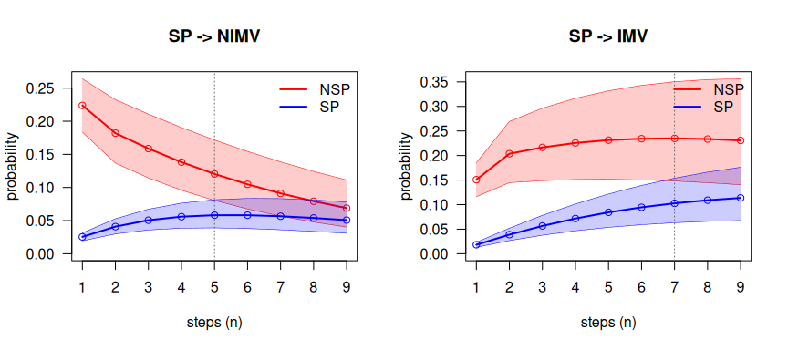
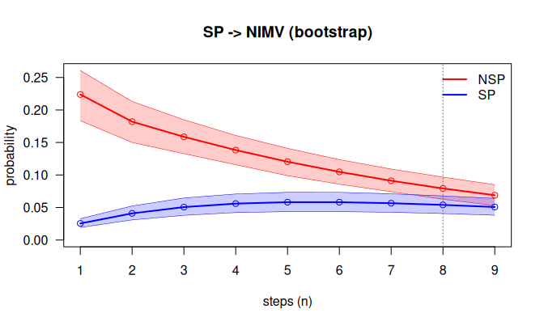

Second-order Markov multistate models in R, illustrated on the DIVINE cohort. Install the development version from GitHub:
# install.packages("remotes")
remotes::install_github("jcarmezim/mstate2", build_vignettes = TRUE)This guide shows how to analyse a multistate process with second-order Markov models in mstate2, using the DIVINE cohort of patients hospitalised with COVID-19, the real-data illustration of Najera-Zuloaga, Besalú and Gómez Melis (2025). It reproduces the analysis of the paper step by step and adds bootstrap intervals for the predictions. Every exported function is introduced at the point of the analysis where it is needed, with its arguments, what it computes and how to read its output. A complete function reference is in vignette("reference").
1. Second-order models
A classical multistate model (e.g. with mstate) assumes the first-order Markov property: the state at the next time depends on the past only through the state at the current time. mstate2 adds one step of memory: the state at the next time depends on the state at the current time and at the previous time. In discrete time, the basic quantity is the 1-step second-order transition probability
where is the state at the previous time, the state at the current time and the state at the next time. States at earlier times are assumed irrelevant. The pair is called the history.
Assumptions:
- Discrete time: the process is observed on a regular grid (here, days).
- Second order: the next state depends on only.
- Time homogeneity: does not depend on .
- Independent patients.
Notation
| Symbol | Meaning | In the package |
|---|---|---|
| state occupied at time |
state column of a panel |
|
| patients with , , | table N of prep2()
|
|
| patients at risk: , | table Y of prep2()
|
|
| 1-step second-order transition probability | P2est()$P[j, l, h] |
|
| , the -step probability | ckequations() |
Tensor layout. Probabilities are stored in an array indexed P[j, l, h]: rows = state at the current time, columns = state at the next time, slices = state at the previous time. Each slice P[, , h] is an ordinary transition matrix.
Package map
| Stage | Function | Output (class) |
|---|---|---|
| Data |
sojourn_to_panel(), rnd()
|
daily panel, a tibble (id, time, state)
|
| Counting processes | prep2() |
msm2data |
| Estimation |
P2est(), P2boot()
|
P2est, P2boot
|
| Prediction | ckequations() |
vector / matrix / tibble |
| Does the previous time matter? |
compare2(), overlap_step()
|
msm2pred, list |
| Simulation | simulate2() |
panel |
2. The DIVINE cohort
DIVINE followed 2076 patients hospitalised with COVID-19. The multistate extract is distributed by the DIVINE project (msm_data/MSM_Data.RData) and is not included in mstate2. It is a data frame MSM with one row per patient:
| Column | Content |
|---|---|
id |
patient identifier |
inistat |
state at admission (1 = non-severe pneumonia, 2 = severe pneumonia) |
t.nosp, t.sp, t.nimv, t.mv, t.recov
|
days spent in each state |
disch.s, death.s
|
0/1 indicators of discharge and death |
The states are non-severe pneumonia (NSP), severe pneumonia (SP), non-invasive and invasive mechanical ventilation (NIMV, IMV), recovery after respiratory support (Recov), discharge (Disch) and death (Death).
3. Preparing the data
All the functions of the package work on a daily panel: one row per patient and day, with columns id, time and state. Any data in that form can be passed to prep2(); for data like DIVINE, with the days spent in each state, sojourn_to_panel() builds it.
sojourn_to_panel(): from days spent in each state
sojourn_to_panel(data, id, segments, absorbing, round_fun = rnd)| Argument | Meaning |
|---|---|
data |
one row per patient |
id |
name of the identifier column |
segments |
named vector c(state = "duration column"), in visiting order
|
absorbing |
named vector c(state = "0/1 indicator"); the first one equal to 1 ends follow-up |
round_fun |
discretisation of the durations (default rnd()) |
For each patient, every duration is rounded to whole days, each state is repeated as many days as its duration, in the order of segments, and the absorbing state whose indicator is 1 is appended. A patient with no event is right-censored. Because only total durations are available, the order of the visits is the one given by segments and each state is visited at most once.
segs <- c(NSP = "t.nosp", SP = "t.sp", NIMV = "t.nimv", IMV = "t.mv", Recov = "t.recov")
absb <- c(Disch = "disch.s", Death = "death.s")
panel <- sojourn_to_panel(MSM, id = "id", segments = segs, absorbing = absb)
dim(panel)
#> [1] 27736 3
count(panel, state)
#> # A tibble: 7 × 2
#> state n
#> <chr> <int>
#> 1 Death 218
#> 2 Disch 1858
#> 3 IMV 4681
#> 4 NIMV 1019
#> 5 NSP 12432
#> 6 Recov 4228
#> 7 SP 3300count() gives the patient-days in each state: the panel has one row per patient and day of follow-up, ending in Disch or Death.
rnd(): rounding half away from zero
round() sends halves to the nearest even integer, so a stay of half a day would vanish. rnd() sends them away from zero, as in the DIVINE analysis. In DIVINE, 146 severe-pneumonia stays last a whole number of days plus one half. If a positive stay rounds to 0 days, sojourn_to_panel() drops it and warns, because the transitions into and out of that state would be lost; this never happens in DIVINE.
prep2(): the second-order counting processes
prep2(data, id = "id", time = "time", state = "state",
states = NULL, absorbing = NULL, drop.na = FALSE, check.consecutive = TRUE)| Argument | Meaning |
|---|---|
data |
daily panel |
id, time, state
|
column names |
states |
state space and its order (default: observed states) |
absorbing |
absorbing states (default: states that are never left) |
drop.na |
drop rows with missing values (with a warning) instead of failing |
check.consecutive |
warn if a patient’s days are not consecutive |
prep2() forms, for every patient, all triples of consecutive days , and counts them: is the number of patients with history that are in at time , and the number at risk. The first two days of each patient have no complete history and form no triple.
estados <- c("NSP", "SP", "Recov", "NIMV", "IMV", "Disch", "Death")
d <- prep2(panel, states = estados)
d
#> <msm2data> second-order counting processes
#> subjects : 2076
#> observed triples: 23584
#> time range : 0 - 138
#> states (7) : NSP, SP, Recov, NIMV, IMV, Disch, Death
#> absorbing : Disch, Death
#> distinct (h,j) : 12
head(d$N)
#> # A tibble: 6 × 5
#> h j l s N
#> <fct> <fct> <fct> <int> <int>
#> 1 NSP NSP NSP 2 1505
#> 2 NSP NSP NSP 3 1306
#> 3 NSP NSP NSP 4 1147
#> 4 NSP NSP NSP 5 955
#> 5 NSP NSP NSP 6 788
#> 6 NSP NSP NSP 7 610
head(d$Y)
#> # A tibble: 6 × 4
#> h j s Y
#> <fct> <fct> <int> <int>
#> 1 NSP NSP 2 1658
#> 2 NSP NSP 3 1505
#> 3 NSP NSP 4 1306
#> 4 NSP NSP 5 1147
#> 5 NSP NSP 6 955
#> 6 NSP NSP 7 788Besides N and Y, the object contains triples, one row per patient and day at risk (id, h, j, l, s), which P2boot() uses to resample patients.
Why. The likelihood of a second-order Markov chain depends on the data only through these counts (Anderson and Goodman, 1957): they are computed once and every other function reuses them.
summary() reports the exposure of each history : the number of patient-days at risk (the denominator of the estimator) and the range of times:
expo <- summary(d)
#> <msm2data summary>
#> 2076 subjects, 23584 triples, time 0-138
#> exposure per (h, j) pair:
#> # A tibble: 12 × 5
#> h j total_at_risk s_min s_max
#> <fct> <fct> <int> <int> <int>
#> 1 NSP NSP 10577 2 43
#> 2 NSP SP 411 2 37
#> 3 SP SP 2668 2 50
#> 4 SP Recov 223 3 51
#> 5 SP NIMV 214 2 37
#> 6 SP IMV 166 2 38
#> 7 Recov Recov 3764 4 138
#> 8 NIMV Recov 101 3 36
#> 9 NIMV NIMV 805 3 41
#> 10 NIMV IMV 102 3 21
#> 11 IMV Recov 140 4 97
#> 12 IMV IMV 4413 3 96Histories such as accumulate more than 10000 patient-days, while has 101: the second will have much wider confidence intervals.
4. Estimation
P2est(): the relative probability estimator
| Argument | Meaning |
|---|---|
object |
an msm2data object |
conf.level |
confidence level |
ci |
"wald" (symmetric) or "logit" (delta method on the log-odds scale) |
clip |
truncate Wald intervals to |
Each probability is estimated with the relative probability estimator (RPE), which pools all transitions and all patient-days at risk of the history:
These are Eq. 9 and the variance of Theorem 5 of the paper; the Wald interval is that of its Corollary 2. On DIVINE, the estimates coincide with those of the paper’s code.
For every absorbing state , P[a, a, h] is set to 1 for every , so that no probability is lost when predictions are propagated.
fit <- P2est(d)
fit
#> <P2est> RPE estimates of 1-step second-order transition probabilities
#> states: NSP, SP, Recov, NIMV, IMV, Disch, Death
#> 95% wald confidence intervals; 2076 subjects
#> 39 estimated transition probabilities (h -> j -> l)The estimate table has one row per observed , with the estimate, standard error, interval, number of transitions (n.trans) and patient-days at risk (at.risk). Table 2 of the paper is the part for patients in severe pneumonia at the current time:
fit$estimate |>
filter(j == "SP")
#> # A tibble: 10 × 9
#> h j l p se lower upper n.trans at.risk
#> <fct> <fct> <fct> <dbl> <dbl> <dbl> <dbl> <int> <int>
#> 1 NSP SP SP 0.616 0.0240 0.569 0.663 253 411
#> 2 NSP SP Recov 0.00730 0.00420 0 0.0155 3 411
#> 3 NSP SP NIMV 0.224 0.0206 0.184 0.264 92 411
#> 4 NSP SP IMV 0.151 0.0177 0.116 0.185 62 411
#> 5 NSP SP Death 0.00243 0.00243 0 0.00720 1 411
#> 6 SP SP SP 0.865 0.00662 0.852 0.878 2307 2668
#> 7 SP SP Recov 0.0825 0.00533 0.0720 0.0929 220 2668
#> 8 SP SP NIMV 0.0255 0.00305 0.0195 0.0315 68 2668
#> 9 SP SP IMV 0.0184 0.00260 0.0133 0.0235 49 2668
#> 10 SP SP Death 0.00900 0.00183 0.00541 0.0126 24 2668A patient in SP who was in NSP at the previous time (who has just worsened) has a probability of 0.224 of non-invasive ventilation the next day; one who was already in SP at the previous time, of 0.025. A first-order model would give them the same probability.
The tensor holds the same estimates; P["SP", , ] shows, for each state at the previous time (columns), the distribution of the next state (rows):
round(fit$P["SP", , c("NSP", "SP")], 3)
#> NSP SP
#> NSP 0.000 0.000
#> SP 0.616 0.865
#> Recov 0.007 0.082
#> NIMV 0.224 0.025
#> IMV 0.151 0.018
#> Disch 0.000 0.000
#> Death 0.002 0.009Logit intervals stay inside and are preferable for small probabilities:
P2boot(): bootstrap of patients
P2boot(object, B = 200, conf.level = 0.95, seed = NULL)A patient contributes many days to the same history, and the -step predictions of Section 5 need intervals that account for the uncertainty of all the estimates at once. P2boot() resamples whole patients with replacement and re-estimates every probability in each of the B replicates. The result is a P2est object with the replicates attached and an extra column se.boot; every function that takes a P2est also takes a P2boot and then uses percentile bootstrap intervals. The per-patient counts are computed once, so replicates are cheap:
system.time(bt <- P2boot(d, B = 500, seed = 1))
#> user system elapsed
#> 0.210 0.008 0.225
bt$estimate |>
filter(j == "SP") |>
select(h, l, p, se, se.boot)
#> # A tibble: 10 × 5
#> h l p se se.boot
#> <fct> <fct> <dbl> <dbl> <dbl>
#> 1 NSP SP 0.616 0.0240 0.0244
#> 2 NSP Recov 0.00730 0.00420 0.00419
#> 3 NSP NIMV 0.224 0.0206 0.0198
#> 4 NSP IMV 0.151 0.0177 0.0180
#> 5 NSP Death 0.00243 0.00243 0.00238
#> 6 SP SP 0.865 0.00662 0.00736
#> 7 SP Recov 0.0825 0.00533 0.00430
#> 8 SP NIMV 0.0255 0.00305 0.00347
#> 9 SP IMV 0.0184 0.00260 0.00275
#> 10 SP Death 0.00900 0.00183 0.00199Why. Patients are the independent units and their days are not, so whole patients are resampled, the standard bootstrap for clustered data (Davison and Hinkley, 1997; Field and Welsh, 2007). The -step predictions are non-linear functions of all the estimates; propagating every replicate and taking percentiles (Efron and Tibshirani, 1993) avoids a cumbersome delta-method variance.
5. Prediction
ckequations(): the extended Chapman–Kolmogorov relation
ckequations(x, h, j, l = NULL, nsteps = 9, bounds = FALSE)| Argument | Meaning |
|---|---|
x |
a P2est or P2boot object, or any tensor |
h, j
|
state at time 0 (the previous time) and at time 1 (the current time) |
l |
target state(s); NULL = the whole distribution |
nsteps |
horizon |
bounds |
add intervals: evolution intervals for a P2est, percentile intervals for a P2boot
|
It computes . The second-order chain is rewritten as a first-order chain on pairs , with transition matrix ; the distribution of the pair is multiplied by once per step, which is exact and linear in .
Distribution of the state over the next 9 days for a patient in SP who was in NSP at the previous time:
round(ckequations(fit, h = "NSP", j = "SP", nsteps = 9), 3)
#> NSP SP Recov NIMV IMV Disch Death
#> [1,] 0 0.616 0.007 0.224 0.151 0.000 0.002
#> [2,] 0 0.532 0.067 0.182 0.204 0.001 0.015
#> [3,] 0 0.460 0.132 0.159 0.217 0.005 0.028
#> [4,] 0 0.398 0.183 0.138 0.226 0.015 0.040
#> [5,] 0 0.344 0.220 0.120 0.231 0.032 0.052
#> [6,] 0 0.298 0.247 0.105 0.234 0.054 0.063
#> [7,] 0 0.257 0.264 0.091 0.235 0.079 0.074
#> [8,] 0 0.222 0.275 0.079 0.234 0.106 0.084
#> [9,] 0 0.192 0.279 0.069 0.231 0.135 0.094Each row sums to 1. With one target and bounds = TRUE, the paper’s evolution intervals propagate the lower and upper confidence tensors:
ckequations(fit, h = "NSP", j = "SP", l = "NIMV", nsteps = 9, bounds = TRUE)
#> # A tibble: 9 × 4
#> n estimate lower upper
#> <int> <dbl> <dbl> <dbl>
#> 1 1 0.224 0.184 0.264
#> 2 2 0.182 0.137 0.233
#> 3 3 0.159 0.114 0.211
#> 4 4 0.138 0.0958 0.190
#> 5 5 0.120 0.0804 0.172
#> 6 6 0.105 0.0675 0.154
#> 7 7 0.0912 0.0568 0.139
#> 8 8 0.0793 0.0478 0.124
#> 9 9 0.0689 0.0403 0.111These intervals are conservative: they assume that all the probabilities are simultaneously at their lower (or upper) limit, so they widen quickly with . With a P2boot object the intervals are bootstrap percentiles:
ckequations(bt, h = "NSP", j = "SP", l = "NIMV", nsteps = 9, bounds = TRUE)
#> # A tibble: 9 × 4
#> n estimate lower upper
#> <int> <dbl> <dbl> <dbl>
#> 1 1 0.224 0.183 0.261
#> 2 2 0.182 0.150 0.213
#> 3 3 0.159 0.133 0.185
#> 4 4 0.138 0.116 0.161
#> 5 5 0.120 0.0989 0.141
#> 6 6 0.105 0.0858 0.124
#> 7 7 0.0912 0.0743 0.109
#> 8 8 0.0793 0.0626 0.0968
#> 9 9 0.0689 0.0530 0.08506. Does the previous time matter?
compare2() and overlap_step(): for how long?
compare2(object, h, j, l, nsteps = 9, bounds = TRUE)
overlap_step(x)compare2() computes the -step curves for several states at the previous time h, with a common current state j and target l, and returns an msm2pred object with print(), summary() and plot() methods. overlap_step() finds, for two curves, the first step at which their intervals overlap: from then on, the state at the previous time no longer changes the prediction significantly. It returns the step n, the time s = n + 1, the number of leading steps with separated intervals and the separation at each step.
With evolution intervals, as in Section 6.3 of the paper:
cmp_nimv <- compare2(fit, h = c("NSP", "SP"), j = "SP", l = "NIMV")
cmp_imv <- compare2(fit, h = c("NSP", "SP"), j = "SP", l = "IMV")
summary(cmp_nimv)
#> Trajectory comparison (RPE, 95% evolution intervals)
#> target 'NIMV' via current state 'SP'; preceding: NSP, SP
#> intervals first overlap at step 5 (time s = 6); significant for the first 4 step(s).
summary(cmp_imv)
#> Trajectory comparison (RPE, 95% evolution intervals)
#> target 'IMV' via current state 'SP'; preceding: NSP, SP
#> intervals first overlap at step 7 (time s = 8); significant for the first 6 step(s).
op <- par(mfrow = c(1, 2))
plot(cmp_nimv, dualaxis = FALSE, xlab = "steps (n)", main = "SP -> NIMV")
plot(cmp_imv, dualaxis = FALSE, xlab = "steps (n)", main = "SP -> IMV")
plot of chunk compare2-plot
par(op)The dotted line marks the first overlap: 5 days for NIMV and 7 for IMV, as in the paper. With a P2boot fit the same comparison uses bootstrap intervals, which are narrower than the evolution intervals:
cmp_b <- compare2(bt, h = c("NSP", "SP"), j = "SP", l = "NIMV")
summary(cmp_b)
#> Trajectory comparison (RPE, 95% bootstrap intervals)
#> target 'NIMV' via current state 'SP'; preceding: NSP, SP
#> intervals first overlap at step 8 (time s = 9); significant for the first 7 step(s).
plot(cmp_b, dualaxis = FALSE, xlab = "steps (n)", main = "SP -> NIMV (bootstrap)")
plot of chunk compare2-boot
7. Simulation: simulate2()
simulate2(n, tensor, first, init = NULL, entry = NULL, states = NULL, maxT = 1000)simulate2() generates a daily panel from a second-order model given by a tensor P[j, l, h], a matrix first for the first move (which has no previous time) and the distribution init of the state at time 0; with entry, patients enter at different global times (Section 5 of the paper). It is useful to study the methods under a known model; vignette("paper") uses it to reproduce the simulation study of the paper (Table 1). For instance, from the model fitted to DIVINE:
first_moves <- inner_join(
panel |> filter(time == 0) |> select(id, from = state), # state at admission
panel |> filter(time == 1) |> select(id, to = state), # state on day 1
by = "id")
first_mat <- first_moves |> # first move (no previous time)
count(from = factor(from, estados), to = factor(to, estados), .drop = FALSE) |>
group_by(from) |>
mutate(p = n / pmax(sum(n), 1)) |>
ungroup() |>
xtabs(formula = p ~ from + to) |>
unclass()
init <- first_moves |> # distribution at admission
count(state = factor(from, estados), .drop = FALSE) |>
mutate(p = n / sum(n)) |>
pull(p, name = state)
set.seed(1)
sim <- simulate2(2000, fit$P, first = first_mat, init = init)
fit_sim <- P2est(prep2(sim, states = estados))
round(c(DIVINE = fit$P["SP", "NIMV", "NSP"], simulated = fit_sim$P["SP", "NIMV", "NSP"]), 3)
#> DIVINE simulated
#> 0.224 0.2328. Methodological choices
| Choice | Why | Reference |
|---|---|---|
| Discrete time, second order | memory of one previous time with a manageable number of parameters | Besalú and Gómez Melis (2024) |
| Counting processes computed once | they are sufficient statistics of the model | Anderson and Goodman (1957) |
| Relative probability estimator only | more efficient than the conditional probability estimator | Najera-Zuloaga et al. (2025) |
| Logit intervals as an option | Wald intervals behave poorly near 0 or 1 | Brown, Cai and DasGupta (2001) |
| Prediction through the chain on pairs | exact, linear in the horizon | Benson, Gleich and Lim (2017) |
| First overlap of the intervals | the criterion of Section 6.3 of the paper | Najera-Zuloaga et al. (2025) |
| Bootstrap of whole patients | patients are the independent units | Davison and Hinkley (1997); Field and Welsh (2007) |
| Percentile intervals for -step predictions | non-linear functions of all the estimates; near-nominal coverage in simulation | Efron and Tibshirani (1993) |
| Tables handled with the tidyverse and returned as tibbles; tensors as arrays | readable data handling; the predictions are linear algebra | Wickham et al. (2019) |
9. Summary
| Question | Function |
|---|---|
| How do I build the daily panel? |
sojourn_to_panel(), rnd()
|
| What are the counts? |
prep2(), summary()
|
| What is ? |
P2est(), P2boot()
|
| Where will a patient be in days? | ckequations() |
| Does the state at the previous time matter, and for how long? |
compare2(), overlap_step()
|
| How do the methods behave under a known model? | simulate2() |
References
Anderson, T. W. and Goodman, L. A. (1957). Statistical inference about Markov chains. The Annals of Mathematical Statistics, 28(1), 89–110.
Benson, A. R., Gleich, D. F. and Lim, L.-H. (2017). The spacey random walk: a stochastic process for higher-order data. SIAM Review, 59(2), 321–345.
Besalú, M. and Gómez Melis, G. (2024). Second order Markov multistate models. SORT, 48(2), 209–234.
Brown, L. D., Cai, T. T. and DasGupta, A. (2001). Interval estimation for a binomial proportion. Statistical Science, 16(2), 101–133.
Davison, A. C. and Hinkley, D. V. (1997). Bootstrap Methods and their Application. Cambridge University Press.
Efron, B. and Tibshirani, R. J. (1993). An Introduction to the Bootstrap. Chapman and Hall.
Field, C. A. and Welsh, A. H. (2007). Bootstrapping clustered data. Journal of the Royal Statistical Society: Series B, 69(3), 369–390.
Najera-Zuloaga, J., Besalú, M. and Gómez Melis, G. (2025). Second-order Markov multistate models: nonparametric estimation and inference. Manuscript submitted for publication.
Wickham, H. et al. (2019). Welcome to the tidyverse. Journal of Open Source Software, 4(43), 1686.